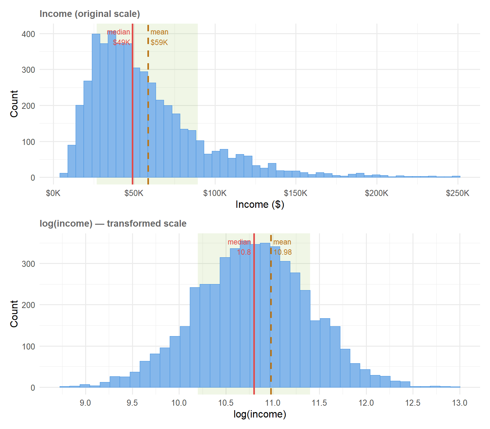
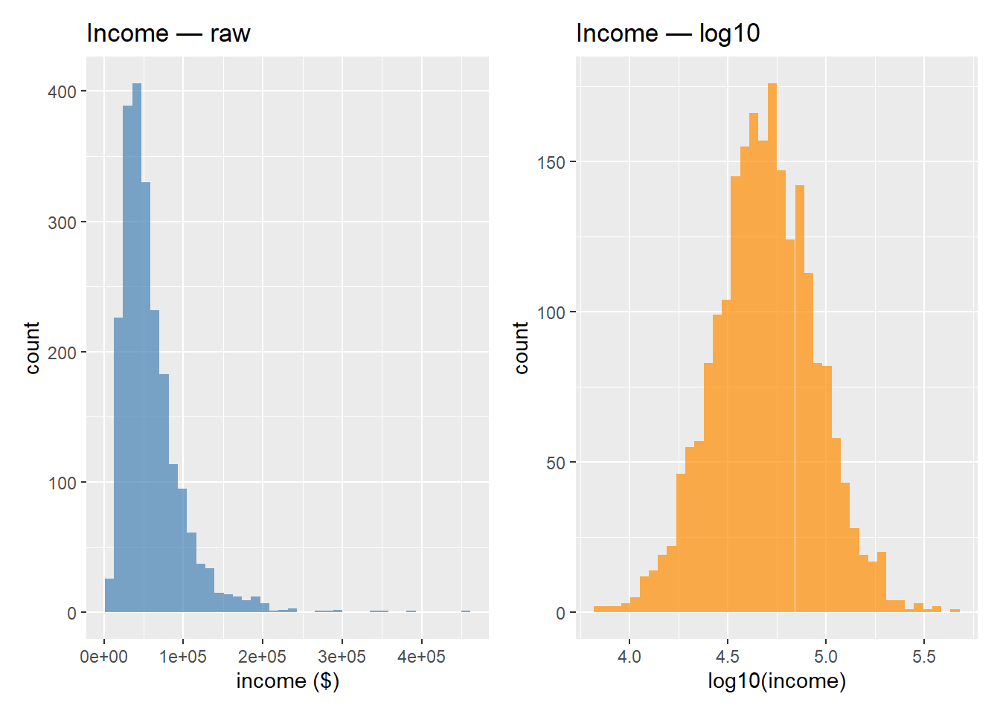

Code
library(tidymodels) # umbrella: rsample, recipes, parsnip, workflows, yardstick
library(tidyverse)
library(janitor) # clean_names()
library(skimr) # skim()
tidymodels_prefer() # resolve function-name conflicts
set.seed(2024)IBM 6540 — Applied Machine Learning for Marketing
Jae Min Jung
June 30, 2026
By the end of this notebook you will be able to:
rsamplerecipe() pipeline for common transformations: log scaling, dummy encoding, imputation, and normalizationprep() / bake()workflow()Textbook reference: Tidy Modeling with R (TMWR), Chapters 5 & 8 (https://www.tmwr.org/splitting, https://www.tmwr.org/recipes)
We use a synthetic direct-mail dataset that mirrors a real acquisition campaign. Each row is one prospect; the outcome is whether they responded (bought).
# ── Synthetic direct-mail dataset ──────────────────────────────────────────────
set.seed(123)
n <- 3000
mail_data <- tibble(
customer_id = paste0("C", str_pad(1:n, 5, pad = "0")),
age = round(rnorm(n, mean = 45, sd = 12)),
income = round(rlnorm(n, meanlog = 10.8, sdlog = 0.6)), # right-skewed
recency_days = round(rexp(n, rate = 1 / 60)), # days since last purchase
freq_12mo = rpois(n, lambda = 3), # purchases in 12 months
avg_order_amt = round(rlnorm(n, meanlog = 4.2, sdlog = 0.5), 2),
channel = sample(
c("email", "direct_mail", "digital"),
n,
replace = TRUE,
prob = c(0.5, 0.3, 0.2)
),
region = sample(
c("West", "South", "Midwest", "Northeast"),
n,
replace = TRUE
),
loyalty_tier = sample(
c("Bronze", "Silver", "Gold", "Platinum"),
n,
replace = TRUE,
prob = c(0.4, 0.3, 0.2, 0.1)
),
responded = rbinom(
n,
1,
prob = plogis(
-3 +
0.02 * (age - 45) +
0.3 * log(income / 50000) +
0.1 * freq_12mo -
0.005 * recency_days
)
)
) |>
mutate(
income = if_else(runif(n) < 0.08, NA_real_, income),
avg_order_amt = if_else(runif(n) < 0.05, NA_real_, avg_order_amt),
responded = factor(responded, levels = c(1, 0), labels = c("yes", "no"))
)
# introduce ~8 % missingness in income and avg_order_amt
glimpse(mail_data)Rows: 3,000
Columns: 10
$ customer_id <chr> "C00001", "C00002", "C00003", "C00004", "C00005", "C0000…
$ age <dbl> 38, 42, 64, 46, 47, 66, 51, 30, 37, 40, 60, 49, 50, 46, …
$ income <dbl> 44793, 40269, 20560, 32261, 233070, 47933, 84804, 43883,…
$ recency_days <dbl> 103, 102, 27, 115, 47, 106, 4, 62, 13, 21, 139, 100, 9, …
$ freq_12mo <int> 4, 3, 0, 3, 1, 3, 5, 2, 1, 6, 1, 3, 3, 3, 6, 1, 1, 1, 6,…
$ avg_order_amt <dbl> 80.19, NA, 54.80, 46.49, 64.86, 78.43, 39.45, NA, 68.26,…
$ channel <chr> "email", "digital", "digital", "email", "digital", "dire…
$ region <chr> "West", "South", "Northeast", "Northeast", "Midwest", "W…
$ loyalty_tier <chr> "Bronze", "Bronze", "Bronze", "Bronze", "Gold", "Silver"…
$ responded <fct> no, no, yes, no, yes, yes, no, no, no, no, no, no, no, n…| Name | mail_data |
| Number of rows | 3000 |
| Number of columns | 10 |
| _______________________ | |
| Column type frequency: | |
| character | 4 |
| factor | 1 |
| numeric | 5 |
| ________________________ | |
| Group variables | None |
Variable type: character
| skim_variable | n_missing | complete_rate | min | max | empty | n_unique | whitespace |
|---|---|---|---|---|---|---|---|
| customer_id | 0 | 1 | 6 | 6 | 0 | 3000 | 0 |
| channel | 0 | 1 | 5 | 11 | 0 | 3 | 0 |
| region | 0 | 1 | 4 | 9 | 0 | 4 | 0 |
| loyalty_tier | 0 | 1 | 4 | 8 | 0 | 4 | 0 |
Variable type: factor
| skim_variable | n_missing | complete_rate | ordered | n_unique | top_counts |
|---|---|---|---|---|---|
| responded | 0 | 1 | FALSE | 2 | no: 2858, yes: 142 |
Variable type: numeric
| skim_variable | n_missing | complete_rate | mean | sd | p0 | p25 | p50 | p75 | p100 | hist |
|---|---|---|---|---|---|---|---|---|---|---|
| age | 0 | 1.00 | 45.16 | 11.92 | 8.00 | 37.0 | 45.00 | 53.00 | 86.00 | ▁▅▇▃▁ |
| income | 240 | 0.92 | 58349.86 | 38521.39 | 6924.00 | 33242.0 | 49331.50 | 72438.50 | 455628.00 | ▇▁▁▁▁ |
| recency_days | 0 | 1.00 | 60.25 | 59.61 | 0.00 | 18.0 | 42.00 | 84.00 | 515.00 | ▇▂▁▁▁ |
| freq_12mo | 0 | 1.00 | 2.94 | 1.71 | 0.00 | 2.0 | 3.00 | 4.00 | 10.00 | ▇▇▂▁▁ |
| avg_order_amt | 144 | 0.95 | 75.73 | 40.24 | 11.67 | 47.5 | 66.37 | 94.71 | 443.48 | ▇▂▁▁▁ |
Marketing context. Notice that income and avg_order_amt are right-skewed (typical for financial variables) and contain missing values — two very common real-world preprocessing challenges.
library(tidyverse)
library(patchwork)
set.seed(42)
n <- 5000
meanlog <- 10.8
sdlog <- 0.6
income <- rlnorm(n, meanlog = meanlog, sdlog = sdlog)
log_income <- log(income)
median_raw <- exp(meanlog)
mean_raw <- exp(meanlog + sdlog^2 / 2)
gsd_low <- median_raw / exp(sdlog)
gsd_high <- median_raw * exp(sdlog)
log_median <- meanlog
log_mean <- meanlog + sdlog^2 / 2
log_sd_low <- meanlog - sdlog
log_sd_high <- meanlog + sdlog
df_raw <- tibble(income = income) |> filter(income < 250000)
df_log <- tibble(log_income = log_income)
p1 <- ggplot(df_raw, aes(x = income)) +
annotate(
"rect",
xmin = gsd_low,
xmax = gsd_high,
ymin = -Inf,
ymax = Inf,
fill = "#97C459",
alpha = 0.15
) +
geom_histogram(
bins = 50,
fill = "#85B7EB",
color = "#378ADD",
linewidth = 0.3
) +
geom_vline(aes(xintercept = median_raw, color = "Median"), linewidth = 1) +
geom_vline(
aes(xintercept = mean_raw, color = "Mean"),
linewidth = 1,
linetype = "dashed"
) +
annotate(
"text",
x = median_raw - 1500,
y = Inf,
label = "median\n$49K",
color = "#E24B4A",
vjust = 1.3,
hjust = 1,
size = 3
) +
annotate(
"text",
x = mean_raw + 1500,
y = Inf,
label = "mean\n$59K",
color = "#BA7517",
vjust = 1.3,
hjust = 0,
size = 3
) +
scale_color_manual(values = c("Median" = "#E24B4A", "Mean" = "#BA7517")) +
scale_x_continuous(
labels = scales::dollar_format(scale = 1e-3, suffix = "K")
) +
labs(x = "Income ($)", y = "Count", title = "Income (original scale)") +
theme_minimal(base_size = 12) +
theme(
legend.position = "none",
plot.title = element_text(size = 11, face = "bold", color = "gray40")
)
p2 <- ggplot(df_log, aes(x = log_income)) +
annotate(
"rect",
xmin = log_sd_low,
xmax = log_sd_high,
ymin = -Inf,
ymax = Inf,
fill = "#97C459",
alpha = 0.15
) +
geom_histogram(
bins = 40,
fill = "#85B7EB",
color = "#378ADD",
linewidth = 0.3
) +
geom_vline(aes(xintercept = log_median, color = "Median"), linewidth = 1) +
geom_vline(
aes(xintercept = log_mean, color = "Mean"),
linewidth = 1,
linetype = "dashed"
) +
annotate(
"text",
x = log_median - 0.03,
y = Inf,
label = "median\n10.8",
color = "#E24B4A",
vjust = 1.3,
hjust = 1,
size = 3
) +
annotate(
"text",
x = log_mean + 0.03,
y = Inf,
label = "mean\n10.98",
color = "#BA7517",
vjust = 1.3,
hjust = 0,
size = 3
) +
scale_color_manual(values = c("Median" = "#E24B4A", "Mean" = "#BA7517")) +
scale_x_continuous(breaks = seq(8, 14, by = 0.5)) +
labs(
x = "log(income)",
y = "Count",
title = "log(income) — transformed scale"
) +
theme_minimal(base_size = 12) +
theme(
legend.position = "none",
plot.title = element_text(size = 11, face = "bold", color = "gray40")
)
p1 / p2
The income variable was generated using a log-normal distribution via rlnorm(n, meanlog = 10.8, sdlog = 0.6). The parameters meanlog and sdlog describe the distribution of log(income) — not income itself. To recover interpretable statistics on the original dollar scale:
Median income (the “typical” earner): \[\text{Median} = e^{\mu} = e^{10.8} \approx \$49{,}021\]
Mean income (pulled up by high earners): \[\text{Mean} = e^{\mu + \sigma^2/2} = e^{10.8 + 0.18} \approx \$58{,}689\]
Why are they different? Income is right-skewed — a small number of high earners pull the mean above the median. The median is preserved under exponentiation (the middle person stays the middle person), but the mean is not. The correction term \(e^{\sigma^2/2}\) accounts for the skew introduced by the long right tail.
Standard deviation on the dollar scale is less commonly reported for log-normal data. Instead, practitioners often describe spread using the geometric standard deviation (GSD): \[\text{GSD} = e^{\sigma} = e^{0.6} \approx 1.82\]
This means a typical income is within a factor of 1.82 above or below the median — roughly between \(\$49{,}021 / 1.82 \approx \$26{,}935\) and \(\$49{,}021 \times 1.82 \approx \$89{,}218\).
The test set simulates unseen future customers. Any transformation parameter (mean, standard deviation, imputation value) estimated on the full dataset “leaks” information about the test set into the model — this is called data leakage and leads to overly optimistic performance estimates.
The golden rule: fit everything on training data, apply to test data.
Training rows: 2400 Test rows : 600 Marketing note. Direct-mail response rates are typically 1–5 %. Stratification ensures the rare “yes” class is represented in both sets. Without it, a small test set might have almost no responders by chance.
Change prop to 0.70 and re-run the split. How many records move from training to test? How does the response rate change?
A recipe is a reusable preprocessing script tied to a specific formula and training dataset. Steps are declared with step_*() functions; nothing is computed until you call prep().
mail_rec <- recipe(responded ~ ., data = mail_train) |>
# ── Step 1: Remove ID column (not a predictor) ────────────────────────────
update_role(customer_id, new_role = "ID") |>
# ── Step 2: Impute missing numeric values with the median ─────────────────
step_impute_median(all_numeric_predictors()) |>
# ── Step 3: Log-transform right-skewed numeric predictors ─────────────────
step_log(income, avg_order_amt, recency_days, base = 10, offset = 1) |>
# ── Step 4: Normalize (center + scale) all numeric predictors ─────────────
step_normalize(all_numeric_predictors()) |>
# ── Step 5: Create dummy variables from nominal predictors ─────────────────
step_dummy(all_nominal_predictors()) |>
# ── Step 6: Remove zero-variance predictors (safety net) ──────────────────
step_zv(all_predictors())
mail_recstep_impute_median)Why median and not mean? The median is robust to the same right-skew that makes these variables candidates for log transformation. Using the mean on a skewed distribution would impute an “average” that may not represent the typical customer.
step_log)# Visual: income before and after log10
p1 <- mail_train |>
filter(!is.na(income)) |>
ggplot(aes(income)) +
geom_histogram(bins = 40, fill = "steelblue", alpha = 0.7) +
labs(title = "Income — raw", x = "income ($)")
p2 <- mail_train |>
filter(!is.na(income)) |>
ggplot(aes(log10(income))) +
geom_histogram(bins = 40, fill = "darkorange", alpha = 0.7) +
labs(title = "Income — log10", x = "log10(income)")
library(patchwork)
p1 + p2
step_normalize)Centering and scaling puts all numeric variables on the same unit-free scale. This is required for distance-based models (KNN, SVM) and strongly recommended for logistic regression with regularization.
# Prep just the first three steps to see the effect of normalization
rec_partial <- recipe(
responded ~ income + freq_12mo + age,
data = mail_train
) |>
step_impute_median(all_numeric_predictors()) |>
step_log(income, base = 10, offset = 1) |>
step_normalize(all_numeric_predictors())
prep(rec_partial) |>
bake(new_data = mail_train) |>
summary() income freq_12mo age responded
Min. :-3.448174 Min. :-1.72324 Min. :-2.89068 yes: 111
1st Qu.:-0.615244 1st Qu.:-0.55560 1st Qu.:-0.69877 no :2289
Median :-0.007824 Median : 0.02822 Median :-0.02434
Mean : 0.000000 Mean : 0.00000 Mean : 0.00000
3rd Qu.: 0.635022 3rd Qu.: 0.61204 3rd Qu.: 0.73439
Max. : 3.920573 Max. : 4.11495 Max. : 3.43212 step_dummy)step_dummy() creates \(k - 1\) columns per factor (reference encoding) to avoid perfect multicollinearity.
prep() estimates all statistics from the training data. bake() applies those statistics to any dataset.
Rows: 2,400
Columns: 15
$ customer_id <chr> "C00003", "C00004", "C00005", "C00006", "C00007"…
$ age <dbl> 1.5774328, 0.0599612, 0.1442652, 1.7460408, 0.48…
$ income <dbl> -1.53272663, -0.73981043, 2.74071226, -0.0429237…
$ recency_days <dbl> -0.23248316, 1.00553540, 0.23697962, 0.93519273,…
$ freq_12mo <dbl> -1.72323961, 0.02821793, -1.13942043, 0.02821793…
$ avg_order_amt <dbl> -0.406346493, -0.742580883, -0.060723460, 0.3299…
$ responded <fct> yes, no, yes, yes, no, no, no, no, no, no, no, n…
$ channel_direct_mail <dbl> 0, 0, 0, 1, 0, 0, 1, 0, 0, 1, 0, 0, 0, 0, 0, 0, …
$ channel_email <dbl> 0, 1, 0, 0, 1, 1, 0, 1, 1, 0, 1, 0, 1, 1, 0, 1, …
$ region_Northeast <dbl> 1, 1, 0, 0, 0, 0, 0, 0, 0, 0, 0, 1, 0, 1, 0, 0, …
$ region_South <dbl> 0, 0, 0, 0, 0, 1, 1, 0, 0, 1, 0, 0, 0, 0, 0, 0, …
$ region_West <dbl> 0, 0, 0, 1, 0, 0, 0, 1, 0, 0, 0, 0, 1, 0, 1, 0, …
$ loyalty_tier_Gold <dbl> 0, 0, 1, 0, 0, 0, 0, 1, 1, 0, 0, 1, 0, 1, 0, 0, …
$ loyalty_tier_Platinum <dbl> 0, 0, 0, 0, 0, 0, 0, 0, 0, 0, 0, 0, 0, 0, 0, 0, …
$ loyalty_tier_Silver <dbl> 0, 0, 0, 1, 0, 0, 1, 0, 0, 1, 0, 0, 1, 0, 1, 0, …Rows: 600
Columns: 15
$ customer_id <chr> "C00001", "C00002", "C00014", "C00015", "C00017"…
$ age <dbl> -0.61447061, -0.27725471, 0.05996120, -0.6144706…
$ income <dbl> -0.162172282, -0.349566007, 0.945485454, -0.2544…
$ recency_days <dbl> 0.91042346, 0.90200799, -0.36674750, 1.46239312,…
$ freq_12mo <dbl> 0.61203711, 0.02821793, 0.02821793, 1.77967546, …
$ avg_order_amt <dbl> 0.375609111, -0.009128452, 1.158042902, -0.75579…
$ responded <fct> no, no, no, no, no, no, no, no, no, no, no, yes,…
$ channel_direct_mail <dbl> 0, 0, 1, 1, 1, 1, 0, 0, 0, 0, 0, 0, 1, 0, 0, 0, …
$ channel_email <dbl> 1, 0, 0, 0, 0, 0, 1, 1, 0, 1, 0, 0, 0, 0, 1, 1, …
$ region_Northeast <dbl> 0, 0, 0, 0, 0, 0, 0, 0, 1, 0, 0, 0, 1, 0, 1, 0, …
$ region_South <dbl> 0, 1, 1, 1, 0, 1, 1, 0, 0, 1, 0, 0, 0, 0, 0, 1, …
$ region_West <dbl> 1, 0, 0, 0, 0, 0, 0, 1, 0, 0, 0, 1, 0, 1, 0, 0, …
$ loyalty_tier_Gold <dbl> 0, 0, 0, 0, 0, 0, 1, 1, 0, 0, 1, 0, 0, 0, 1, 1, …
$ loyalty_tier_Platinum <dbl> 0, 0, 0, 0, 0, 0, 0, 0, 1, 1, 0, 0, 0, 0, 0, 0, …
$ loyalty_tier_Silver <dbl> 0, 0, 0, 0, 0, 1, 0, 0, 0, 0, 0, 0, 1, 1, 0, 0, …Common mistake. Calling prep() on the test data separately would re-estimate the normalization parameters from test data. Always prep() on training, then bake() new data through the trained recipe.
In tidymodels, a workflow bundles the recipe + model so both are fitted and applied together — no chance of forgetting preprocessing.
══ Workflow ════════════════════════════════════════════════════════════════════
Preprocessor: Recipe
Model: logistic_reg()
── Preprocessor ────────────────────────────────────────────────────────────────
5 Recipe Steps
• step_impute_median()
• step_log()
• step_normalize()
• step_dummy()
• step_zv()
── Model ───────────────────────────────────────────────────────────────────────
Logistic Regression Model Specification (classification)
Main Arguments:
penalty = 0.01
mixture = 1
Computational engine: glmnet Ordinary logistic regression finds coefficients that best fit the training data. But with many predictors — common in marketing datasets with demographics, behavioral variables, and RFM features — the model can overfit: it learns the noise in the training data rather than the true signal, and performs poorly on new customers.
Regularization fixes this by adding a penalty term to the loss function that discourages large coefficients. The model is forced to be simpler, which usually means it generalizes better to new data.
The penalized loss function looks like this:
\[\text{Loss} = \text{(fit to training data)} + \lambda \cdot \text{(penalty on coefficients)}\]
The \(\lambda\) (penalty) parameter controls how hard we squeeze the coefficients:
Ridge adds the sum of squared coefficients as the penalty:
\[\text{Penalty} = \sum_{j} \beta_j^2\]
Ridge shrinks all coefficients toward zero but never sets them exactly to zero. Every predictor stays in the model, just with a smaller influence. This works well when you believe most predictors are genuinely useful and want to reduce their magnitude without discarding any.
In tidymodels: mixture = 0
Lasso adds the sum of absolute coefficients as the penalty:
\[\text{Penalty} = \sum_{j} |\beta_j|\]
Lasso can shrink coefficients all the way to exactly zero, effectively removing those predictors from the model. This makes Lasso a built-in variable selection tool — it produces a sparse model that only keeps the most important predictors. In a direct-mail context, this is useful when you have dozens of customer attributes and want the model to tell you which ones actually drive response.
In tidymodels: mixture = 1
Elastic net blends Ridge and Lasso:
\[\text{Penalty} = \alpha \sum_{j} |\beta_j| + (1 - \alpha) \sum_{j} \beta_j^2\]
The mixture parameter (\(\alpha\)) controls the blend:
mixture |
Behavior |
|---|---|
1 |
Pure Lasso |
0 |
Pure Ridge |
0.5 |
Equal blend of both |
Elastic net is often the safest default when you are unsure: it can do variable selection like Lasso while handling correlated predictors more stably (Lasso tends to arbitrarily pick one variable from a correlated group; elastic net can keep both with reduced coefficients).
In tidymodels: 0 < mixture < 1
The penalty value (\(\lambda\)) is a hyperparameter — it is not learned from the data during model fitting. Instead, it must be chosen beforehand or tuned using cross-validation. A common workflow in tidymodels is to replace the fixed value with tune() and search over a grid of candidates:
For now, we use penalty = 0.01 as a reasonable starting value. Later in the course we will tune this properly.
| Method | Penalty type | Zeroes out predictors? | Best when… |
|---|---|---|---|
| Ridge | Sum of squares | No | Most predictors are useful |
| Lasso | Sum of absolutes | Yes | Many irrelevant predictors |
| Elastic net | Blend of both | Sometimes | Unsure, or predictors are correlated |
Replace step_impute_median() with step_impute_mean(). Re-prep the recipe and compare the imputed values. Which would you prefer for income and why?
loyalty_tier is ordinal (Bronze < Silver < Gold < Platinum). Replace step_dummy() with step_ordinalscore() for loyalty_tier only. Does this change the number of columns in the baked data?
# Hint: use step_ordinalscore() from the recipes package
# loyalty_tier is currently character. To be converted to ordinal scale, it must be an ordered factor first.
mail_data <- mail_data |>
mutate(
loyalty_tier = factor(
loyalty_tier,
levels = c("Bronze", "Silver", "Gold", "Platinum"),
ordered = TRUE
)
)
# Your code hereAdd an interaction between freq_12mo and log10(income) using step_interact(). What is the marketing intuition for this interaction?
Remove step_normalize() from the recipe, retrain the Lasso, and compare roc_auc before and after. What happens to model performance?
The split used strata = responded. Remove stratification and re-split five times. Calculate the standard deviation of the response rate in the test sets. Does stratification reduce variance?
Prep the recipe correctly using mail_train, then bake mail_test. Next, incorrectly prep the same recipe using mail_test. Compare the normalization statistics for income. Why is the second approach considered data leakage?
Use tidy(mail_prep) to list the recipe steps. Then inspect the imputation values and normalization statistics using tidy(mail_prep, number = 1) and tidy(mail_prep, number = 3). What values were learned during prep()?
Remove update_role(customer_id, new_role = "ID") from the recipe and re-prep it. What happens to customer_id in the baked data? Why should an ID variable not be used as a predictor?
| Concept | Function | Key Argument |
|---|---|---|
| Data split | initial_split() |
prop, strata |
| Training set | training() |
— |
| Test set | testing() |
— |
| Define recipe | recipe() |
formula, data = train |
| Log transform | step_log() |
base, offset |
| Median impute | step_impute_median() |
selector |
| Normalize | step_normalize() |
selector |
| Dummy encode | step_dummy() |
all_nominal_predictors() |
| Estimate steps | prep() |
training = train |
| Apply steps | bake() |
new_data = test |
| Bundle recipe + model | workflow() |
— |
R version 4.6.0 (2026-04-24 ucrt)
Platform: x86_64-w64-mingw32/x64
Running under: Windows 11 x64 (build 26200)
Matrix products: default
LAPACK version 3.12.1
locale:
[1] LC_COLLATE=English_United States.utf8
[2] LC_CTYPE=English_United States.utf8
[3] LC_MONETARY=English_United States.utf8
[4] LC_NUMERIC=C
[5] LC_TIME=English_United States.utf8
time zone: America/Los_Angeles
tzcode source: internal
attached base packages:
[1] stats graphics grDevices utils datasets methods base
other attached packages:
[1] patchwork_1.3.2 skimr_2.2.2 janitor_2.2.1 lubridate_1.9.5
[5] forcats_1.0.1 stringr_1.6.0 readr_2.2.0 tibble_3.3.1
[9] tidyverse_2.0.0 yardstick_1.4.0 workflowsets_1.1.1 workflows_1.3.0
[13] tune_2.1.0 tidyr_1.3.2 tailor_0.1.0 rsample_1.3.2
[17] recipes_1.3.3 purrr_1.2.2 parsnip_1.6.0 modeldata_1.5.1
[21] infer_1.1.0 ggplot2_4.0.3 dplyr_1.2.1 dials_1.4.3
[25] scales_1.4.0 broom_1.0.12 tidymodels_1.5.0
loaded via a namespace (and not attached):
[1] conflicted_1.2.0 rlang_1.2.0 magrittr_2.0.5
[4] snakecase_0.11.1 furrr_0.4.0 otel_0.2.0
[7] compiler_4.6.0 vctrs_0.7.3 shape_1.4.6.1
[10] pkgconfig_2.0.3 fastmap_1.2.0 backports_1.5.1
[13] labeling_0.4.3 rmarkdown_2.31 prodlim_2026.03.11
[16] tzdb_0.5.0 xfun_0.57 glmnet_5.0
[19] cachem_1.1.0 jsonlite_2.0.0 parallel_4.6.0
[22] R6_2.6.1 stringi_1.8.7 RColorBrewer_1.1-3
[25] parallelly_1.47.0 rpart_4.1.27 Rcpp_1.1.1-1.1
[28] iterators_1.0.14 knitr_1.51 future.apply_1.20.2
[31] base64enc_0.1-6 Matrix_1.7-5 splines_4.6.0
[34] nnet_7.3-20 timechange_0.4.0 tidyselect_1.2.1
[37] rstudioapi_0.18.0 yaml_2.3.12 timeDate_4052.112
[40] codetools_0.2-20 listenv_0.10.1 lattice_0.22-9
[43] withr_3.0.2 S7_0.2.2 evaluate_1.0.5
[46] future_1.70.0 survival_3.8-6 pillar_1.11.1
[49] foreach_1.5.2 generics_0.1.4 hms_1.1.4
[52] globals_0.19.1 class_7.3-23 glue_1.8.1
[55] tools_4.6.0 data.table_1.18.2.1 gower_1.0.2
[58] grid_4.6.0 ipred_0.9-15 repr_1.1.7
[61] cli_3.6.6 DiceDesign_1.10 lava_1.9.1
[64] gtable_0.3.6 digest_0.6.39 htmlwidgets_1.6.4
[67] farver_2.1.2 memoise_2.0.1 htmltools_0.5.9
[70] lifecycle_1.0.5 hardhat_1.4.3 MASS_7.3-65
[73] sparsevctrs_0.3.6 ---
title: "M2 - Data Splitting and Preprocessing with recipes"
subtitle: "Codebook with Exercises"
author: "Jae Min Jung"
date: today
format:
html:
toc: true
toc-depth: 4
toc-expand: 1
toc-location: right-body
toc-title: "Contents"
number-sections: true
code-fold: show
code-tools: true
theme: cosmo
highlight-style: github
df-print: paged
link-external-newwindow: true
#embed-resources: true
execute:
warning: false
message: false
freeze: true
---
# Learning Objectives {.unnumbered}
By the end of this notebook you will be able to:
1. Split data into training and test sets in a principled way using `rsample`
2. Explain *why* preprocessing must be learned on training data only
3. Build a `recipe()` pipeline for common transformations: log scaling, dummy encoding, imputation, and normalization
4. Inspect and debug a recipe with `prep()` / `bake()`
5. Connect a recipe to a model inside a `workflow()`
> **Textbook reference:** *Tidy Modeling with R* (TMWR), Chapters 5 & 8 (<https://www.tmwr.org/splitting>, <https://www.tmwr.org/recipes>)
------------------------------------------------------------------------
# Setup
```{r setup}
library(tidymodels) # umbrella: rsample, recipes, parsnip, workflows, yardstick
library(tidyverse)
library(janitor) # clean_names()
library(skimr) # skim()
tidymodels_prefer() # resolve function-name conflicts
set.seed(2024)
```
------------------------------------------------------------------------
# The Marketing Dataset
We use a synthetic **direct-mail** dataset that mirrors a real acquisition campaign. Each row is one prospect; the outcome is whether they **responded** (bought).
```{r load-data}
# ── Synthetic direct-mail dataset ──────────────────────────────────────────────
set.seed(123)
n <- 3000
mail_data <- tibble(
customer_id = paste0("C", str_pad(1:n, 5, pad = "0")),
age = round(rnorm(n, mean = 45, sd = 12)),
income = round(rlnorm(n, meanlog = 10.8, sdlog = 0.6)), # right-skewed
recency_days = round(rexp(n, rate = 1 / 60)), # days since last purchase
freq_12mo = rpois(n, lambda = 3), # purchases in 12 months
avg_order_amt = round(rlnorm(n, meanlog = 4.2, sdlog = 0.5), 2),
channel = sample(
c("email", "direct_mail", "digital"),
n,
replace = TRUE,
prob = c(0.5, 0.3, 0.2)
),
region = sample(
c("West", "South", "Midwest", "Northeast"),
n,
replace = TRUE
),
loyalty_tier = sample(
c("Bronze", "Silver", "Gold", "Platinum"),
n,
replace = TRUE,
prob = c(0.4, 0.3, 0.2, 0.1)
),
responded = rbinom(
n,
1,
prob = plogis(
-3 +
0.02 * (age - 45) +
0.3 * log(income / 50000) +
0.1 * freq_12mo -
0.005 * recency_days
)
)
) |>
mutate(
income = if_else(runif(n) < 0.08, NA_real_, income),
avg_order_amt = if_else(runif(n) < 0.05, NA_real_, avg_order_amt),
responded = factor(responded, levels = c(1, 0), labels = c("yes", "no"))
)
# introduce ~8 % missingness in income and avg_order_amt
glimpse(mail_data)
```
```{r skim}
skim(mail_data)
```
::: callout-note
**Marketing context.** Notice that `income` and `avg_order_amt` are right-skewed (typical for financial variables) and contain missing values — two very common real-world preprocessing challenges.
:::
## Explaining how Income distribution changes from normal to logged data
```{r}
#| fig-height: 7
#| fig-width: 8
#| code-fold: true
library(tidyverse)
library(patchwork)
set.seed(42)
n <- 5000
meanlog <- 10.8
sdlog <- 0.6
income <- rlnorm(n, meanlog = meanlog, sdlog = sdlog)
log_income <- log(income)
median_raw <- exp(meanlog)
mean_raw <- exp(meanlog + sdlog^2 / 2)
gsd_low <- median_raw / exp(sdlog)
gsd_high <- median_raw * exp(sdlog)
log_median <- meanlog
log_mean <- meanlog + sdlog^2 / 2
log_sd_low <- meanlog - sdlog
log_sd_high <- meanlog + sdlog
df_raw <- tibble(income = income) |> filter(income < 250000)
df_log <- tibble(log_income = log_income)
p1 <- ggplot(df_raw, aes(x = income)) +
annotate(
"rect",
xmin = gsd_low,
xmax = gsd_high,
ymin = -Inf,
ymax = Inf,
fill = "#97C459",
alpha = 0.15
) +
geom_histogram(
bins = 50,
fill = "#85B7EB",
color = "#378ADD",
linewidth = 0.3
) +
geom_vline(aes(xintercept = median_raw, color = "Median"), linewidth = 1) +
geom_vline(
aes(xintercept = mean_raw, color = "Mean"),
linewidth = 1,
linetype = "dashed"
) +
annotate(
"text",
x = median_raw - 1500,
y = Inf,
label = "median\n$49K",
color = "#E24B4A",
vjust = 1.3,
hjust = 1,
size = 3
) +
annotate(
"text",
x = mean_raw + 1500,
y = Inf,
label = "mean\n$59K",
color = "#BA7517",
vjust = 1.3,
hjust = 0,
size = 3
) +
scale_color_manual(values = c("Median" = "#E24B4A", "Mean" = "#BA7517")) +
scale_x_continuous(
labels = scales::dollar_format(scale = 1e-3, suffix = "K")
) +
labs(x = "Income ($)", y = "Count", title = "Income (original scale)") +
theme_minimal(base_size = 12) +
theme(
legend.position = "none",
plot.title = element_text(size = 11, face = "bold", color = "gray40")
)
p2 <- ggplot(df_log, aes(x = log_income)) +
annotate(
"rect",
xmin = log_sd_low,
xmax = log_sd_high,
ymin = -Inf,
ymax = Inf,
fill = "#97C459",
alpha = 0.15
) +
geom_histogram(
bins = 40,
fill = "#85B7EB",
color = "#378ADD",
linewidth = 0.3
) +
geom_vline(aes(xintercept = log_median, color = "Median"), linewidth = 1) +
geom_vline(
aes(xintercept = log_mean, color = "Mean"),
linewidth = 1,
linetype = "dashed"
) +
annotate(
"text",
x = log_median - 0.03,
y = Inf,
label = "median\n10.8",
color = "#E24B4A",
vjust = 1.3,
hjust = 1,
size = 3
) +
annotate(
"text",
x = log_mean + 0.03,
y = Inf,
label = "mean\n10.98",
color = "#BA7517",
vjust = 1.3,
hjust = 0,
size = 3
) +
scale_color_manual(values = c("Median" = "#E24B4A", "Mean" = "#BA7517")) +
scale_x_continuous(breaks = seq(8, 14, by = 0.5)) +
labs(
x = "log(income)",
y = "Count",
title = "log(income) — transformed scale"
) +
theme_minimal(base_size = 12) +
theme(
legend.position = "none",
plot.title = element_text(size = 11, face = "bold", color = "gray40")
)
p1 / p2
```
::: {.callout-note title="Log-Normal Parameters: What Do They Mean?"}
The income variable was generated using a log-normal distribution via `rlnorm(n, meanlog = 10.8, sdlog = 0.6)`. The parameters `meanlog` and `sdlog` describe the distribution of **log(income)** — not income itself. To recover interpretable statistics on the original dollar scale:
**Median income** (the "typical" earner): $$\text{Median} = e^{\mu} = e^{10.8} \approx \$49{,}021$$
**Mean income** (pulled up by high earners): $$\text{Mean} = e^{\mu + \sigma^2/2} = e^{10.8 + 0.18} \approx \$58{,}689$$
**Why are they different?** Income is right-skewed — a small number of high earners pull the mean above the median. The median is preserved under exponentiation (the middle person stays the middle person), but the mean is not. The correction term $e^{\sigma^2/2}$ accounts for the skew introduced by the long right tail.
**Standard deviation** on the dollar scale is less commonly reported for log-normal data. Instead, practitioners often describe spread using the **geometric standard deviation** (GSD): $$\text{GSD} = e^{\sigma} = e^{0.6} \approx 1.82$$
This means a typical income is within a factor of 1.82 above or below the median — roughly between $\$49{,}021 / 1.82 \approx \$26{,}935$ and $\$49{,}021 \times 1.82 \approx \$89{,}218$.
:::
------------------------------------------------------------------------
# Data Splitting
## Why We Split
The test set simulates **unseen future customers**. Any transformation parameter (mean, standard deviation, imputation value) estimated on the full dataset "leaks" information about the test set into the model — this is called **data leakage** and leads to overly optimistic performance estimates.
The golden rule: **fit everything on training data, apply to test data**.
## Stratified Random Split
```{r split}
mail_data |>
count(responded) |>
mutate(percent = n / sum(n))
set.seed(617)
mail_split <- initial_split(
mail_data,
prop = 0.80, # 80 % train, 20 % test
strata = responded # preserve class balance in both sets
)
mail_train <- training(mail_split)
mail_test <- testing(mail_split)
cat("Training rows:", nrow(mail_train), "\n")
cat("Test rows :", nrow(mail_test), "\n")
```
```{r check-balance}
# Verify class balance is preserved
bind_rows(
mail_train |> count(responded) |> mutate(set = "train"),
mail_test |> count(responded) |> mutate(set = "test")
) |>
group_by(set) |>
mutate(pct = n / sum(n) * 100)
```
::: callout-tip
**Marketing note.** Direct-mail response rates are typically 1–5 %. Stratification ensures the rare "yes" class is represented in both sets. Without it, a small test set might have almost no responders by chance.
:::
## ✏️ Exercise 3.1
Change `prop` to `0.70` and re-run the split. How many records move from training to test? How does the response rate change?
```{r ex3-1, eval=FALSE}
# Your code here
```
------------------------------------------------------------------------
# Building a Recipe
A `recipe` is a **reusable preprocessing script** tied to a specific formula and training dataset. Steps are declared with `step_*()` functions; nothing is computed until you call `prep()`.
## Step-by-Step Construction
```{r recipe-build}
mail_rec <- recipe(responded ~ ., data = mail_train) |>
# ── Step 1: Remove ID column (not a predictor) ────────────────────────────
update_role(customer_id, new_role = "ID") |>
# ── Step 2: Impute missing numeric values with the median ─────────────────
step_impute_median(all_numeric_predictors()) |>
# ── Step 3: Log-transform right-skewed numeric predictors ─────────────────
step_log(income, avg_order_amt, recency_days, base = 10, offset = 1) |>
# ── Step 4: Normalize (center + scale) all numeric predictors ─────────────
step_normalize(all_numeric_predictors()) |>
# ── Step 5: Create dummy variables from nominal predictors ─────────────────
step_dummy(all_nominal_predictors()) |>
# ── Step 6: Remove zero-variance predictors (safety net) ──────────────────
step_zv(all_predictors())
mail_rec
```
### What did we just build?
```{r recipe-summary}
summary(mail_rec) # variable roles
```
## Deep Dive: Each Step
### Imputation (`step_impute_median`)
```{r imputation-demo}
# How much is missing?
mail_train |>
summarise(across(everything(), ~ mean(is.na(.)) * 100)) |>
pivot_longer(
everything(),
names_to = "variable",
values_to = "pct_missing"
) |>
filter(pct_missing > 0)
```
::: callout-important
**Why median and not mean?** The median is robust to the same right-skew that makes these variables candidates for log transformation. Using the mean on a skewed distribution would impute an "average" that may not represent the typical customer.
:::
### Log Transformation (`step_log`)
```{r log-demo}
# Visual: income before and after log10
p1 <- mail_train |>
filter(!is.na(income)) |>
ggplot(aes(income)) +
geom_histogram(bins = 40, fill = "steelblue", alpha = 0.7) +
labs(title = "Income — raw", x = "income ($)")
p2 <- mail_train |>
filter(!is.na(income)) |>
ggplot(aes(log10(income))) +
geom_histogram(bins = 40, fill = "darkorange", alpha = 0.7) +
labs(title = "Income — log10", x = "log10(income)")
library(patchwork)
p1 + p2
```
### Normalization (`step_normalize`)
Centering and scaling puts all numeric variables on the same unit-free scale. This is *required* for distance-based models (KNN, SVM) and strongly recommended for logistic regression with regularization.
```{r normalize-demo}
# Prep just the first three steps to see the effect of normalization
rec_partial <- recipe(
responded ~ income + freq_12mo + age,
data = mail_train
) |>
step_impute_median(all_numeric_predictors()) |>
step_log(income, base = 10, offset = 1) |>
step_normalize(all_numeric_predictors())
prep(rec_partial) |>
bake(new_data = mail_train) |>
summary()
```
### Dummy Variables (`step_dummy`)
```{r dummy-demo}
# Inspect how many dummies will be created
mail_train |>
select(channel, region, loyalty_tier) |>
summarise(
channel_levels = n_distinct(channel),
region_levels = n_distinct(region),
loyalty_tier_levels = n_distinct(loyalty_tier)
)
```
`step_dummy()` creates $k - 1$ columns per factor (reference encoding) to avoid perfect multicollinearity.
------------------------------------------------------------------------
# Preparing and Baking
`prep()` **estimates** all statistics from the training data. `bake()` **applies** those statistics to any dataset.
```{r prep-bake}
mail_prep <- prep(mail_rec) # learns medians, means, SDs, factor levels
# Apply to training data (already done internally, but good to inspect)
train_baked <- bake(mail_prep, new_data = NULL)
glimpse(train_baked)
```
```{r bake-test}
# Apply to test data — uses training statistics, NOT test statistics
test_baked <- bake(mail_prep, new_data = mail_test)
glimpse(test_baked)
```
::: callout-warning
**Common mistake.** Calling `prep()` on the test data separately would re-estimate the normalization parameters from test data. Always `prep()` on training, then `bake()` new data through the trained recipe.
:::
------------------------------------------------------------------------
# Connecting the Recipe to a Model Workflow
In `tidymodels`, a `workflow` bundles the recipe + model so both are fitted and applied together — no chance of forgetting preprocessing.
```{r workflow}
# Model specification
lr_spec <- logistic_reg(penalty = 0.01, mixture = 1) |> # Lasso
set_engine("glmnet") |>
set_mode("classification")
# Workflow
mail_wf <- workflow() |>
add_recipe(mail_rec) |>
add_model(lr_spec)
mail_wf
```
## Regularization Concept
::: {.callout-note title="Regularization: Ridge, Lasso, and Elastic Net"}
### Why Regularization?{.unnumbered}
Ordinary logistic regression finds coefficients that best fit the training data.
But with many predictors — common in marketing datasets with demographics,
behavioral variables, and RFM features — the model can **overfit**: it learns
the noise in the training data rather than the true signal, and performs poorly
on new customers.
Regularization fixes this by adding a **penalty term** to the loss function that
discourages large coefficients. The model is forced to be simpler, which usually
means it generalizes better to new data.
The penalized loss function looks like this:
$$\text{Loss} = \text{(fit to training data)} + \lambda \cdot \text{(penalty on coefficients)}$$
The $\lambda$ (`penalty`) parameter controls how hard we squeeze the coefficients:
- $\lambda = 0$: no regularization, ordinary logistic regression
- Large $\lambda$: heavy shrinkage, very simple model
---
### Three Flavors of Regularization{.unnumbered}
#### Ridge (L2) {.unnumbered}
Ridge adds the **sum of squared coefficients** as the penalty:
$$\text{Penalty} = \sum_{j} \beta_j^2$$
Ridge shrinks all coefficients toward zero but **never sets them exactly to zero**.
Every predictor stays in the model, just with a smaller influence. This works well
when you believe most predictors are genuinely useful and want to reduce their
magnitude without discarding any.
In `tidymodels`: `mixture = 0`
#### Lasso (L1) {.unnumbered}
Lasso adds the **sum of absolute coefficients** as the penalty:
$$\text{Penalty} = \sum_{j} |\beta_j|$$
Lasso can shrink coefficients all the way to **exactly zero**, effectively removing
those predictors from the model. This makes Lasso a built-in **variable selection**
tool — it produces a sparse model that only keeps the most important predictors.
In a direct-mail context, this is useful when you have dozens of customer attributes
and want the model to tell you which ones actually drive response.
In `tidymodels`: `mixture = 1`
#### Elastic Net {.unnumbered}
Elastic net **blends Ridge and Lasso**:
$$\text{Penalty} = \alpha \sum_{j} |\beta_j| + (1 - \alpha) \sum_{j} \beta_j^2$$
The `mixture` parameter ($\alpha$) controls the blend:
| `mixture` | Behavior |
|-----------|----------|
| `1` | Pure Lasso |
| `0` | Pure Ridge |
| `0.5` | Equal blend of both |
Elastic net is often the safest default when you are unsure: it can do variable
selection like Lasso while handling correlated predictors more stably (Lasso tends
to arbitrarily pick one variable from a correlated group; elastic net can keep both
with reduced coefficients).
In `tidymodels`: `0 < mixture < 1`
---
### Choosing $\lambda$ {.unnumbered}
The `penalty` value ($\lambda$) is a **hyperparameter** — it is not learned from
the data during model fitting. Instead, it must be chosen beforehand or tuned using cross-validation. A common workflow in `tidymodels` is to replace the fixed value with `tune()` and search over a grid of candidates:
```r
lr_spec <- logistic_reg(penalty = tune(), mixture = 1) |>
set_engine("glmnet") |>
set_mode("classification")
```
For now, we use `penalty = 0.01` as a reasonable starting value. Later in the
course we will tune this properly.
---
### Quick Reference {.unnumbered}
| Method | Penalty type | Zeroes out predictors? | Best when... |
|--------------|-------------------|------------------------|---------------------------------------|
| Ridge | Sum of squares | No | Most predictors are useful |
| Lasso | Sum of absolutes | Yes | Many irrelevant predictors |
| Elastic net | Blend of both | Sometimes | Unsure, or predictors are correlated |
:::
## Fitting and Predicting
```{r fit-workflow}
# Fit on training data
mail_fit <- fit(mail_wf, data = mail_train)
# Predict on test data
preds <- augment(mail_fit, new_data = mail_test)
preds |> select(customer_id, responded, .pred_class, .pred_yes) |> head()
```
```{r eval-metrics}
# Classification metrics
metrics <- metric_set(accuracy, roc_auc, sens, spec)
preds |>
metrics(truth = responded, estimate = .pred_class, .pred_yes)
```
------------------------------------------------------------------------
# Inspecting and Debugging a Recipe
```{r tidy-recipe}
# See what each step will do / has done (after prep)
tidy(mail_prep)
```
```{r tidy-step}
# Inspect normalization statistics (step 3 = step_normalize)
tidy(mail_prep, number = 3) |> arrange(terms)
```
```{r tidy-impute}
# Inspect imputation values (step 1 = step_impute_median)
tidy(mail_prep, number = 1)
# Compare with this
mail_data |>
summarise(
income = median(income, na.rm = TRUE),
age = median(age),
recency_days = median(recency_days),
freq_12mo = median(freq_12mo),
avg_order_amt = median(avg_order_amt, na.rm = TRUE)
)
```
------------------------------------------------------------------------
# Exercises
## ✏️ Exercise 8.1 — Alternative Imputation
Replace `step_impute_median()` with `step_impute_mean()`. Re-prep the recipe and compare the imputed values. Which would you prefer for `income` and why?
```{r ex8-1, eval=FALSE}
# Your code here
```
## ✏️ Exercise 8.2 — Different Encoding
`loyalty_tier` is ordinal (Bronze \< Silver \< Gold \< Platinum). Replace `step_dummy()` with `step_ordinalscore()` for `loyalty_tier` only. Does this change the number of columns in the baked data?
```{r ex8-2, eval=FALSE}
# Hint: use step_ordinalscore() from the recipes package
# loyalty_tier is currently character. To be converted to ordinal scale, it must be an ordered factor first.
mail_data <- mail_data |>
mutate(
loyalty_tier = factor(
loyalty_tier,
levels = c("Bronze", "Silver", "Gold", "Platinum"),
ordered = TRUE
)
)
# Your code here
```
## ✏️ Exercise 8.3 — Interaction Term
Add an interaction between `freq_12mo` and `log10(income)` using `step_interact()`. What is the marketing intuition for this interaction?
```{r ex8-3, eval=FALSE}
# Your code here
```
## ✏️ Exercise 8.4 — Remove a Step
Remove `step_normalize()` from the recipe, retrain the Lasso, and compare `roc_auc` before and after. What happens to model performance?
```{r ex8-4, eval=FALSE}
# Your code here
```
## ✏️ Exercise 8.5 — Stratification Check
The split used `strata = responded`. Remove stratification and re-split five times. Calculate the standard deviation of the response rate in the test sets. Does stratification reduce variance?
```{r ex8-5, eval=FALSE}
# Your code here
```
## ✏️ Exercise 8.6 — Data Leakage
Prep the recipe correctly using `mail_train`, then bake `mail_test`. Next, incorrectly prep the same recipe using `mail_test`. Compare the normalization statistics for `income`. Why is the second approach considered data leakage?
```{r ex8-6, eval=FALSE}
# Your code here
```
## ✏️ Exercise 8.7 — Inspecting a Recipe
Use `tidy(mail_prep)` to list the recipe steps. Then inspect the imputation values and normalization statistics using `tidy(mail_prep, number = 1)` and `tidy(mail_prep, number = 3)`. What values were learned during `prep()`?
```{r ex8-7, eval=FALSE}
# Your code here
```
## ✏️ Exercise 8.8 — Variable Roles
Remove `update_role(customer_id, new_role = "ID")` from the recipe and re-prep it. What happens to `customer_id` in the baked data? Why should an ID variable not be used as a predictor?
```{r ex8-8, eval=FALSE}
# Your code here
```
------------------------------------------------------------------------
# Summary
| Concept | Function | Key Argument |
|-----------------------|------------------------|----------------------------|
| Data split | `initial_split()` | `prop`, `strata` |
| Training set | `training()` | — |
| Test set | `testing()` | — |
| Define recipe | `recipe()` | formula, `data = train` |
| Log transform | `step_log()` | `base`, `offset` |
| Median impute | `step_impute_median()` | selector |
| Normalize | `step_normalize()` | selector |
| Dummy encode | `step_dummy()` | `all_nominal_predictors()` |
| Estimate steps | `prep()` | `training = train` |
| Apply steps | `bake()` | `new_data = test` |
| Bundle recipe + model | `workflow()` | — |
```{r session-info}
sessionInfo()
```